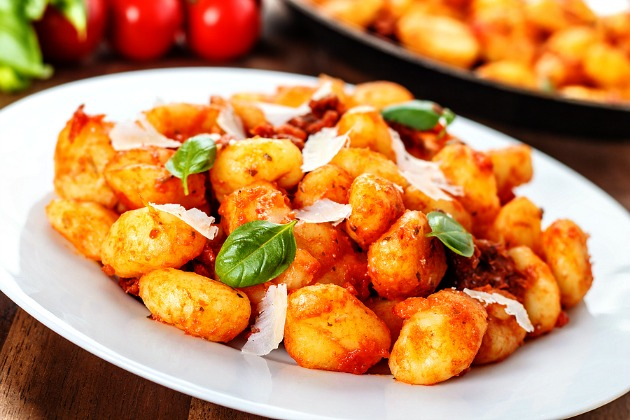

Recipe for Gnocchi

Gnocchi Recipe
Ingredients:
- 1 pound (450g) potato gnocchi
- 2 tablespoons butter
- 2 cloves garlic, minced
- 1/4 cup grated Parmesan cheese
- Fresh basil leaves for garnish (optional)
- Salt and pepper to taste
Instructions:
-
Boil a pot of salted water and cook the potato gnocchi according to the
package instructions or until they float to the surface (usually around
2-3 minutes). Drain and set aside.
-
In a large skillet, melt the butter over medium heat. Add the minced
garlic and sauté for about 1 minute until fragrant.
-
Add the cooked gnocchi to the skillet. Cook for an additional 2-3
minutes, tossing gently until the gnocchi are lightly browned.
-
Sprinkle grated Parmesan cheese over the gnocchi. Stir to combine and
let it melt into a creamy sauce.
- Season with salt and pepper to taste.
-
Serve the gnocchi hot, garnished with fresh basil leaves if desired.